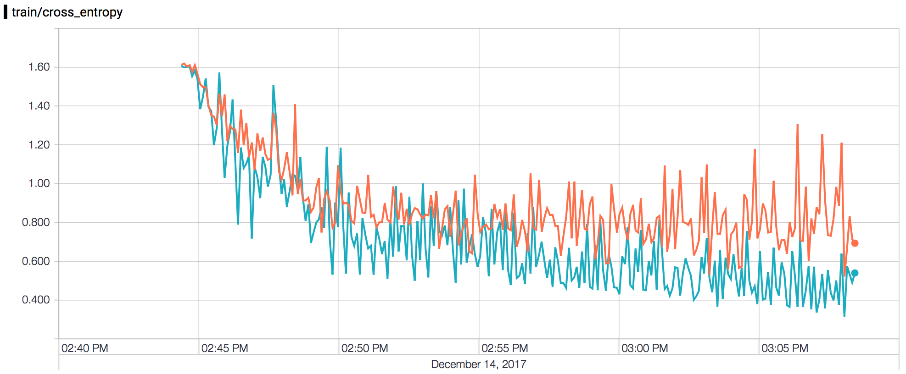
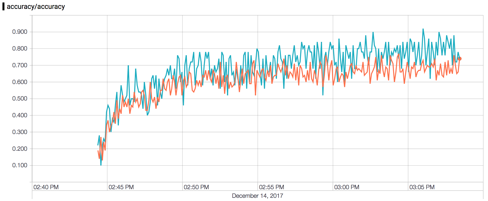

Tutorial 05: public data training (classification)
Posted on Wed 06 December 2017 in larcv-tutorial
In this notebook we train a simple, 10-layers deep convolutional neural network for classifying 5 particle images in a simulated LArTPC detecotr available from the public dataset. We use tensorflow to train the network and larcv_threadio to fetch data from larcv files. If you are completely unfamiliar with larcv_threadio, go look at this quick start. First let's prepare data samples. For the setup of this example, I need to prepare practice_train_5k.root and practice_test_5k.root in the current directory. Let us make symbolic links.
%%bash
# Preparation: make symbolic links for practice_train_10k.root and practice_test_10k.root
PRACTICE_FILE_DIR=../..
ln -sf $PRACTICE_FILE_DIR/practice_train_5k.root ./train.root
ln -sf $PRACTICE_FILE_DIR/practice_test_5k.root ./test.root
Imports¶
from larcv import larcv
from larcv.dataloader2 import larcv_threadio
import numpy as np
import matplotlib
import matplotlib.pyplot as plt
%matplotlib inline
import os,sys,time
# tensorflow/gpu start-up configuration
os.environ['TF_CPP_MIN_LOG_LEVEL'] = '3'
%env CUDA_DEVICE_ORDER=PCI_BUS_ID
%env CUDA_VISIBLE_DEVICES=2
import tensorflow as tf
We set os.environ['TF_CPP_MIN_LOG_LEVEL'] to suppress lots of non-error (standard) output from tensorflow because it can overwhelm ipython's capability to fetch stdout stream.
Configurations¶
Next, let's define configuration variables.
TUTORIAL_DIR = '..'
TRAIN_IO_CONFIG = os.path.join(TUTORIAL_DIR, 'tf/io_train.cfg')
TEST_IO_CONFIG = os.path.join(TUTORIAL_DIR, 'tf/io_test.cfg' )
TRAIN_BATCH_SIZE = 50
TEST_BATCH_SIZE = 100
LOGDIR = 'log'
ITERATIONS = 5000
SAVE_SUMMARY = 20
SAVE_WEIGHTS = 100
# Check log directory is empty
train_logdir = os.path.join(LOGDIR,'train')
test_logdir = os.path.join(LOGDIR,'test')
if not os.path.isdir(train_logdir): os.makedirs(train_logdir)
if not os.path.isdir(test_logdir): os.makedirs(test_logdir)
if len(os.listdir(train_logdir)) or len(os.listdir(test_logdir)):
sys.stderr.write('Error: train or test log dir not empty...\n')
raise OSError
The top block defines a set of constants in capitalized letters. The bottom part is simply checking if the directories where we will store the network training logs are empty or not (so that we won't mix with the previous attempt). So what do the constants do?
TUTORIAL_DIR... points to the top-level directory of the larcv-tutorial repostitory.TRAIN_IO_CONFIG... a configuration file forlarcv_threadioto read data for training.TEST_IO_CONFIG... a configuration file forlarcv_threadioto read data for testing.TRAIN_BATCH_SIZE... a number of images (batch) to be used to calculate the average gradients for updating the network's weights.TEST_BATCH_SIZE... a number of images to be used to calculate the average accuracy using test data set.LOGDIR... the top-level directory to save the tensorboard logs.ITERATIONS... the total number of steps (batches) to train the network.SAVE_SUMMARY... a period in a training step count to save the log (tensorboard summaries).SAVE_WEIGHTS... a period in a training step count to save the network's weights.
Configure data reader¶
We prepare two data reader instances: one for training and another for testing the network. Testing is not absolutely needed but we try here to just cover in this example. We don't go in details of how larcv_threadio works here since there is a dedicated tutorial for that.
#
# Step 0: IO
#
# for "train" data set
train_io = larcv_threadio() # create io interface
train_io_cfg = {'filler_name' : 'TrainIO',
'verbosity' : 0,
'filler_cfg' : TRAIN_IO_CONFIG}
train_io.configure(train_io_cfg) # configure
train_io.start_manager(TRAIN_BATCH_SIZE) # start read thread
time.sleep(2)
train_io.next()
# for "test" data set
test_io = larcv_threadio() # create io interface
test_io_cfg = {'filler_name' : 'TestIO',
'verbosity' : 0,
'filler_cfg' : TEST_IO_CONFIG}
test_io.configure(test_io_cfg) # configure
test_io.start_manager(TEST_BATCH_SIZE) # start read thread
time.sleep(2)
test_io.next()
Defining a network¶
Let's construct a simple network for this exercise. We use 5x2 convolution layers with max-pooling operation followed after every 2 convolution layers except the last layer is average-pooling.
#
# Step 1: Define network
#
import tensorflow.contrib.slim as slim
import tensorflow.python.platform
def build(input_tensor, num_class=4, trainable=True, debug=True):
net = input_tensor
if debug: print('input tensor:', input_tensor.shape)
filters = 32
num_modules = 5
with tf.variable_scope('conv'):
for step in xrange(5):
stride = 2
if step: stride = 1
net = slim.conv2d(inputs = net, # input tensor
num_outputs = filters, # number of filters (neurons) = # of output feature maps
kernel_size = [3,3], # kernel size
stride = stride, # stride size
trainable = trainable, # train or inference
activation_fn = tf.nn.relu, # relu
scope = 'conv%da_conv' % step)
net = slim.conv2d(inputs = net, # input tensor
num_outputs = filters, # number of filters (neurons) = # of output feature maps
kernel_size = [3,3], # kernel size
stride = 1, # stride size
trainable = trainable, # train or inference
activation_fn = tf.nn.relu, # relu
scope = 'conv%db_conv' % step)
if (step+1) < num_modules:
net = slim.max_pool2d(inputs = net, # input tensor
kernel_size = [2,2], # kernel size
stride = 2, # stride size
scope = 'conv%d_pool' % step)
else:
net = tf.layers.average_pooling2d(inputs = net,
pool_size = [net.get_shape()[-2].value,net.get_shape()[-3].value],
strides = 1,
padding = 'valid',
name = 'conv%d_pool' % step)
filters *= 2
if debug: print('After step',step,'shape',net.shape)
with tf.variable_scope('final'):
net = slim.flatten(net, scope='flatten')
if debug: print('After flattening', net.shape)
net = slim.fully_connected(net, int(num_class), scope='final_fc')
if debug: print('After final_fc', net.shape)
return net
Build the network¶
Build the network and define loss, accuracy metrics and our solver. Any optimizer should work but you may have to tune the parameters by yourself. Here, we use RMSPropOptimizer with base learning rate 0.0005 with no justification. Note we add minimal set of tensorflow variables into tf.summary to demonstrate later the tensorboard, a dedicated monitoring/visualization tool for network training with tensorflow.
#
# Step 2: Build network + define loss & solver
#
# retrieve dimensions of data for network construction
dim_data = train_io.fetch_data('train_image').dim()
dim_label = train_io.fetch_data('train_label').dim()
# define place holders
data_tensor = tf.placeholder(tf.float32, [None, dim_data[1] * dim_data[2] * dim_data[3]], name='image')
label_tensor = tf.placeholder(tf.float32, [None, dim_label[1]], name='label')
data_tensor_2d = tf.reshape(data_tensor, [-1,dim_data[1],dim_data[2],dim_data[3]],name='image_reshape')
# Let's keep 10 random set of images in the log
tf.summary.image('input',data_tensor_2d,10)
# build net
net = build(input_tensor=data_tensor_2d, num_class=dim_label[1], trainable=True, debug=False)
# Define accuracy
with tf.name_scope('accuracy'):
correct_prediction = tf.equal(tf.argmax(net,1), tf.argmax(label_tensor,1))
accuracy = tf.reduce_mean(tf.cast(correct_prediction, tf.float32))
tf.summary.scalar('accuracy', accuracy)
# Define loss + backprop as training step
with tf.name_scope('train'):
cross_entropy = tf.reduce_mean(tf.nn.softmax_cross_entropy_with_logits(labels=label_tensor, logits=net))
tf.summary.scalar('cross_entropy',cross_entropy)
train_step = tf.train.RMSPropOptimizer(0.00005).minimize(cross_entropy)
Defining tensorflow IO¶
In the next cell we define tensorflow's IO
merged_summary... is tensorflow operation to create summaries to be written into a log file fortensorboard.writer_train... writes monitoring data for training data sample into a log file.writer_test... is same aswriter_trainexcept it is for testing data sample.saver... is a handle to store the state of the network = trained network variable values (weights, biases, etc.).
#
# Step 3: weight saver & summary writer
#
# Create a bandle of summary
merged_summary=tf.summary.merge_all()
# Create a session
sess = tf.InteractiveSession()
# Initialize variables
sess.run(tf.global_variables_initializer())
# Create a summary writer handle
writer_train=tf.summary.FileWriter(train_logdir)
writer_train.add_graph(sess.graph)
writer_test=tf.summary.FileWriter(test_logdir)
writer_test.add_graph(sess.graph)
# Create weights saver
saver = tf.train.Saver()
Train!¶
#
# Step 4: Run training loop
#
for i in range(ITERATIONS):
train_data = train_io.fetch_data('train_image').data()
train_label = train_io.fetch_data('train_label').data()
feed_dict = { data_tensor : train_data,
label_tensor : train_label }
loss, acc, _ = sess.run([cross_entropy, accuracy, train_step], feed_dict=feed_dict)
if (i+1)%SAVE_SUMMARY == 0:
# Save train log
sys.stdout.write('Training in progress @ step %d loss %g accuracy %g \n' % (i,loss,acc))
sys.stdout.flush()
s = sess.run(merged_summary, feed_dict=feed_dict)
writer_train.add_summary(s,i)
# Calculate & save test log
test_data = test_io.fetch_data('test_image').data()
test_label = test_io.fetch_data('test_label').data()
feed_dict = { data_tensor : test_data,
label_tensor : test_label }
loss, acc = sess.run([cross_entropy, accuracy], feed_dict=feed_dict)
sys.stdout.write('Testing in progress @ step %d loss %g accuracy %g \n' % (i,loss,acc))
sys.stdout.flush()
s = sess.run(merged_summary, feed_dict=feed_dict)
writer_test.add_summary(s,i)
test_io.next()
train_io.next()
if (i+1)%SAVE_WEIGHTS == 0:
ssf_path = saver.save(sess,'weights/toynet',global_step=i)
print('saved @',ssf_path)
# inform log directory
print()
print('Run `tensorboard --logdir=%s` in terminal to see the results.' % LOGDIR)
train_io.reset()
test_io.reset()
Checking log on the tensorboard¶
As the last line above says you can visualize your log using tensorboard. This command
tensorboard --logdir=logon the terminal instantiates the tensorboard server and tells the localhost address to access through your web-browser. You can certainly ssh-tunnel to access the localhost of your remote machine to check it on your local machine's web-browser as well. For the above training, here's the screenshot of the loss and accuracy curve for train and test samples where the blue line represents metric measured on the training set and orange line is for the same on the test sample.


This notebook covered training convolutional neural networks to perform image classification of 5 LArTPC particles using a practice files. We encourage you to design your own network and train on our public dataset! We provide 50,000 entries of 5 particle images (10,000 per particle) for training and separate 40,000 for testing your network. When you are confident, try our data challenge, yet another set of 40,000 events without answers (i.e. no particle information). Share your awesome result in the CSV format to us with your network architecture made available on a github repository.